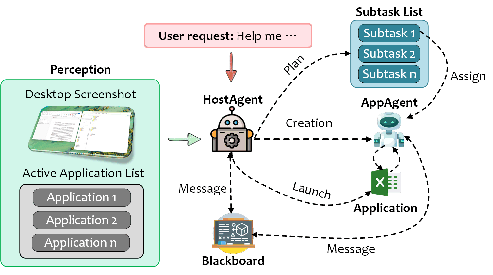
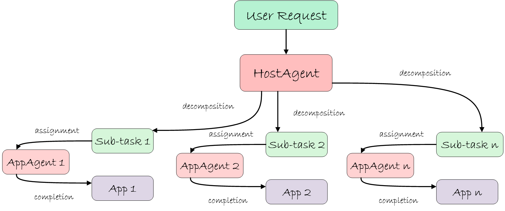

HostAgent: Desktop Orchestrator
HostAgent serves as the centralized control plane of UFO². It interprets user-specified goals, decomposes them into structured subtasks, instantiates and dispatches AppAgent modules, and coordinates their progress across the system. HostAgent provides system-level services for introspection, planning, application lifecycle management, and multi-agent synchronization.
Architecture Overview
Operating atop the native Windows substrate, HostAgent monitors active applications, issues shell commands to spawn new processes as needed, and manages the creation and teardown of application-specific AppAgent instances. All coordination occurs through a persistent state machine, which governs the transitions across execution phases.

Core Responsibilities
Task Decomposition
Given a user's natural language input, HostAgent identifies the underlying task goal and decomposes it into a dependency-ordered subtask graph.
Example: User request "Extract data from Word and create an Excel chart" becomes:
- Extract table from Word document
- Create chart in Excel with extracted data

Application Lifecycle Management
For each subtask, HostAgent inspects system process metadata (via UIA APIs) to determine whether the target application is running. If not, it launches the program and registers it with the runtime.
AppAgent Instantiation
HostAgent spawns the corresponding AppAgent for each active application, providing it with task context, memory references, and relevant toolchains (e.g., APIs, documentation).
Task Scheduling and Control
The global execution plan is serialized into a finite state machine (FSM), allowing HostAgent to enforce execution order, detect failures, and resolve dependencies across agents. See State Machine Details for the FSM architecture.
Shared State Communication
HostAgent reads from and writes to a global blackboard, enabling inter-agent communication and system-level observability for debugging and replay.
Key Characteristics
- Scope: Desktop-level orchestrator (system-wide, not application-specific)
- Lifecycle: Single instance per session, persists throughout task execution
- Hierarchy: Parent agent that manages multiple child AppAgents
- Communication: Owns and coordinates the shared Blackboard
- Control: 7-state finite state machine with 4-phase processing pipeline
Execution Workflow
Deep Dive Topics
- State Machine: 7-state FSM architecture and transitions
- Processing Strategy: 4-phase processing pipeline
- Command System: Desktop-level MCP commands
Input and Output
HostAgent Input
| Input | Description | Type |
|---|---|---|
| User Request | Natural language task description | String |
| Application Information | Active application metadata | List of Dicts |
| Desktop Screenshots | Visual context of desktop state | Image |
| Previous Sub-Tasks | Completed subtask history | List of Dicts |
| Previous Plan | Planned future subtasks | List of Strings |
| Blackboard | Shared memory space | Dictionary |
HostAgent Output
| Output | Description | Type |
|---|---|---|
| Observation | Desktop screenshot analysis | String |
| Thought | Reasoning process | String |
| Current Sub-Task | Active subtask description | String |
| Message | Information for AppAgent | String |
| ControlLabel | Selected application index | String |
| ControlText | Selected application name | String |
| Plan | Future subtask sequence | List of Strings |
| Status | Agent state (CONTINUE/ASSIGN/FINISH/etc.) | String |
| Comment | User-facing information | String |
| Questions | Clarification requests | List of Strings |
| Bash | System command to execute | String |
Example Output:
{
"Observation": "Desktop shows Microsoft Word with document open containing a table",
"Thought": "User wants to extract data from Word first",
"Current Sub-Task": "Extract the table data from the document",
"Message": "Starting data extraction from Word document",
"ControlLabel": "0",
"ControlText": "Microsoft Word - Document1",
"Plan": ["Extract table from Word", "Create chart in Excel"],
"Status": "ASSIGN",
"Comment": "Delegating table extraction to Word AppAgent",
"Questions": [],
"Bash": ""
}
Related Documentation
Architecture & Design:
- Windows Agent Overview: Module architecture and hierarchy
- AppAgent: Application automation agent
- Blackboard: Inter-agent communication
- Memory System: Execution history
Configuration:
- Configuration System Overview: System configuration structure
- Agents Configuration: LLM and agent settings
- System Configuration: Runtime and execution settings
- MCP Reference: MCP server configuration
System Integration:
- Session Management: Session lifecycle
- Round Management: Execution rounds
API Reference
Bases: BasicAgent
The HostAgent class the manager of AppAgents.
Initialize the HostAgent. :name: The name of the agent.
| Parameters: |
|
|---|
Source code in agents/agent/host_agent.py
148 149 150 151 152 153 154 155 156 157 158 159 160 161 162 163 164 165 166 167 168 169 170 171 172 173 174 175 176 177 178 | |
blackboard
property
Get the blackboard.
default_state
property
Get the default state.
status_manager
property
Get the status manager.
sub_agent_amount
property
Get the amount of sub agents.
| Returns: |
|
|---|
context_provision(context)
async
Provide the context for the agent.
| Parameters: |
|
|---|
Source code in agents/agent/host_agent.py
276 277 278 279 280 281 | |
create_subagent(context=None)
Orchestrate creation of the appropriate sub-agent. Decides between third-party agent and built-in app/operator agent.
| Parameters: |
|
|---|
Source code in agents/agent/host_agent.py
313 314 315 316 317 318 319 320 321 322 323 324 325 326 327 328 329 330 331 332 333 334 335 336 337 338 339 340 341 342 343 344 345 346 347 348 349 350 351 352 353 354 355 356 357 358 359 360 361 362 363 | |
get_active_appagent()
Get the active app agent.
| Returns: |
|
|---|
Source code in agents/agent/host_agent.py
205 206 207 208 209 210 | |
get_prompter(is_visual, main_prompt, example_prompt, api_prompt)
Get the prompt for the agent.
| Parameters: |
|
|---|
| Returns: |
|
|---|
Source code in agents/agent/host_agent.py
180 181 182 183 184 185 186 187 188 189 190 191 192 193 194 195 | |
message_constructor(image_list, os_info, plan, prev_subtask, request, blackboard_prompt)
Construct the message.
| Parameters: |
|
|---|
| Returns: |
|
|---|
Source code in agents/agent/host_agent.py
219 220 221 222 223 224 225 226 227 228 229 230 231 232 233 234 235 236 237 238 239 240 241 242 243 244 245 246 247 248 249 250 251 252 253 254 255 | |
print_response(response)
Print the response using the presenter.
| Parameters: |
|
|---|
Source code in agents/agent/host_agent.py
416 417 418 419 420 421 422 423 424 425 426 427 428 429 430 | |
process(context)
async
Process the agent.
| Parameters: |
|
|---|
Source code in agents/agent/host_agent.py
257 258 259 260 261 262 263 264 265 266 267 268 269 270 271 272 273 274 | |
process_confirmation()
TODO: Process the confirmation.
Source code in agents/agent/host_agent.py
365 366 367 368 369 | |
Summary
HostAgent is the desktop-level orchestrator that:
- Decomposes tasks and coordinates AppAgents
- Operates at system level, not application level
- Uses a 7-state FSM: CONTINUE → ASSIGN → AppAgent → CONTINUE → FINISH
- Executes a 4-phase pipeline: DATA_COLLECTION → LLM → ACTION → MEMORY
- Creates, caches, and reuses AppAgent instances
- Provides shared Blackboard memory for all agents
- Maintains single instance per session managing multiple AppAgents
Next Steps:
- Read State Machine for FSM details
- Read Processing Strategy for pipeline architecture
- Read Command System for available desktop operations
- Read AppAgent for application-level execution